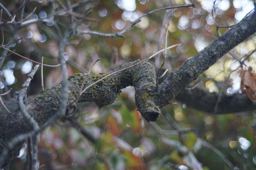
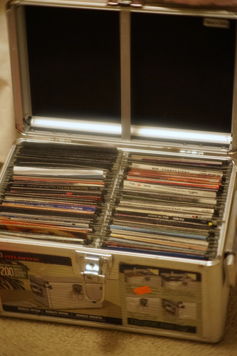

overwhelming lotad
playing: Code:Realize
watching: Live PD
October 10, 2024
I don't have any beautiful dollfoto to share, so please enjoy my "small oddities" found around the neighborhood.
WHAT are these cute berries?!
Fall crocus!!!!!!
I love visiting the 5 chickens who live nearby~


And now, what you are all here for:
(nofoto)
- Andy Bell - Electric Blue $1
Very gay. It's fine, but not Vince Clarke good.
- Nickelback - Silver Side Up $3
- Nine Days - The Madding Crowd $5
Sealed?! not anymore
- Pet Shop Boys - Release $4
- Plumb - Chaotic Resolve $.75
- The Calling - Camino Palmero $1
- Wild Wild West OST $3
Ryan has not stopped singing this
- Dru Hill - We're Not Making Love No More $4

And here is the motherload. This was $9.50 at the thrift store, but Ryan worked out a deal with my new favorite cashier and got me 20 cents off. I wasn't going to type all these up, so you can thank hors for requesting it.
I chose to buy it because there were over 10 CDs included that we did want. They're all a little scratched, but none seem like they wouldn't rip.
- Eminiem - The Eminem Show (clean)
- Flo-Rida - Mail on Sunday
- Snoop Dog - Ego Trippin
- 50 Cent - The Massacre
- Monsters of Rap
- P.M Dawn - Of the Heart, of the Soul and of the Cross: The Utopian Experience
- P.M. Dawn - The Bliss Album…?
- Akon - Trouble
- Akon - Konvicted
- Jibbs - Jibbs Feat. Jibbs
- Dangerous Minds OST
- Romeo + Juliet OST
- The 60's OST
- Phantom of the Opera OST
- Pocahontas OST
- Only The Strong OST
- A Goofy Movie OST
- Titanic OST
- Space Jam OST
- Legends of the Fall OST
- Pooh's Grand Adventure OST (no cover)
- Oliver! OST (no cover)
- Roxette - Don't Bore Us - Get to the Chorus! Roxette's Greatest Hits
- Pet Shop Boys - Discography - The Complete Singles Collection
- Aqua - Aquarium
- Real McCoy - Another Night
- Jump
- Enigma - Le Roi Est Mort, Vive Le Roi!
- Enigma - MCMXCAD.
- Dance Hits '96 Supermix
- Fired Up!
- Technotronic - Pump Up the Jam
- 98 Degrees - 98 Degrees and Rising
- *NSYNC - *NSYNC
- Backstreet Boys - Backstreet Boys
- All 4-One - All 4-One
- ZZ Top - Greatest Hits
- Timmy T - Time After Time
- George Michael - Faith
- Peter Cetera - World Falling Down
- Savage Garden - Savage Garden
- Lionel Richie - Coming Home
- U2 - The Joshua Tree
- Boy George and Culture Club - at Worst... the Best of
- Phil Collins - ...Hits
- Daniel Powter - Daniel Powter
- Michael Bolton - Soul Provider
- Michael Bolton - Time, Love, & Tenderness
- Bruce Springsteen - Born in the USA
- Usher - My Way (Clean) (no cover)
- Foreigner - The Definitive Collection (2 Disc)
- Shania Twain - Come on Over
- Shania Twain - The Woman in Me
- Celine Dion - One Heart (no cover)
- Celine Dion - Falling into You
- Celine Dion - The Colour of my Love
- Celine Dion - Let's Talk About Love
- Celine Dion - All the Way...
- The Pussycat Dolls - Doll Domination
- P!nk - M!ssundaztood
- P!nk - Can't Take Me Home
- Annie Lennox - Diva
- Gwen Stefani - The Sweet Escape
- Gwen Stefani - Love Angel Music Baby
- Madonna - Like a Prayer
- Madonna - Something to Remember
- Madonna - The Immaculate Collection
- Madonna - I'm going to tell you a secret (DVD)
- Cher - Believe
- Mariah Carey - Daydream
- Janet Jackson - Rhythm Nation 1984
- Janet Jackson - Janet.
- Whitney Houston - I'm Your Baby Tonight
- Britney Spears - ...baby one more time
- Britney Spears - oops!... I did it again
- Destiny's Child - Survivor
- Toni Braxton - The Heat
- Toni Braxton - Secrets
- Cyndi Lauper - She's So Unusual
- Tina Turner - Simply the Best
- Tina Turner - Break Every Rule
- Nelly Furtado - Loose
- Brandy - Full Moon
- Christina Aguilera - Christina Aguilera
- Paula Abdul - Shut Up and Dance
- Paula Abdul - Forever Your Girl
- Elvis Presley - The Top Ten Hits (2 Disc)
- Malt Shop Memories (2 Disc)
- The Beach Boys - Made in the USA
- The Fabulous 50s Rock Around the Clock
- The Fabulous 50s Yakety Yak
- #1 Love Songs of the '70s
- 50's Dance Party
- The Very Best of Aretha Franklin of the '60s
Now what do I do with all these CDs? Idk?? cry?? I got more than a couple duplicates that I'll share with Ryan and a few CDs that my mom likes. Luckily Ryan is interested in a lot of the CDs I don't care about at all and also a few that I get first dibs on.
I spent more than a couple hours hunched over my CD binders trying to organize them. I have 4 binders right now and it was really hard to decide how to organize. I'm sure I will have to do a full rearrange again soon if I want to keep them up ;__;